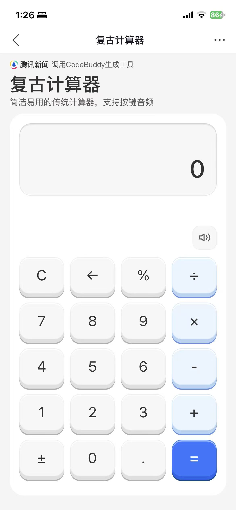
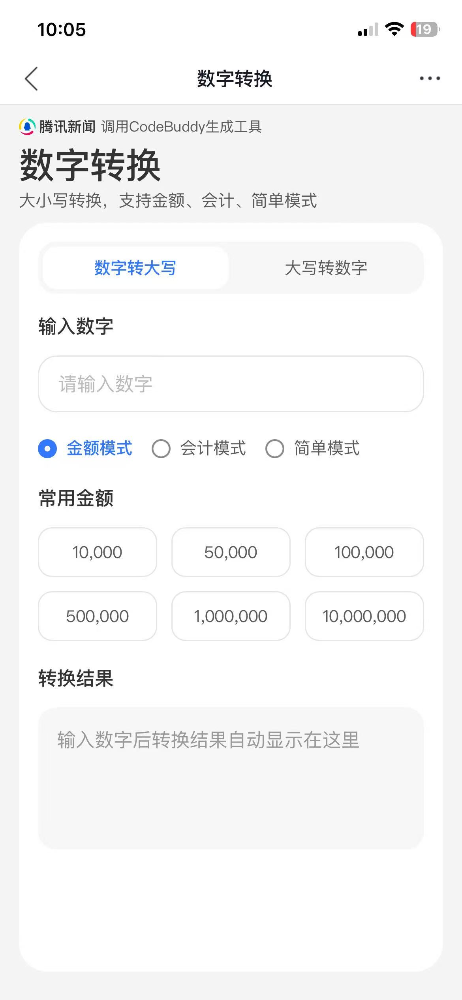
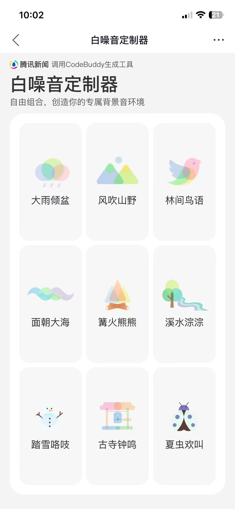
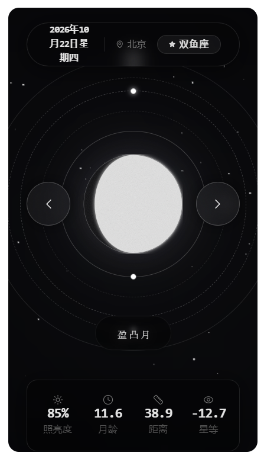
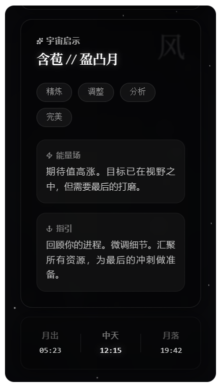
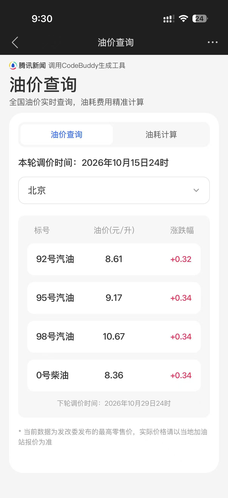
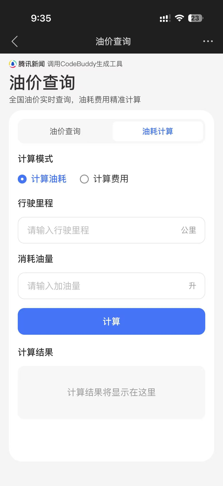
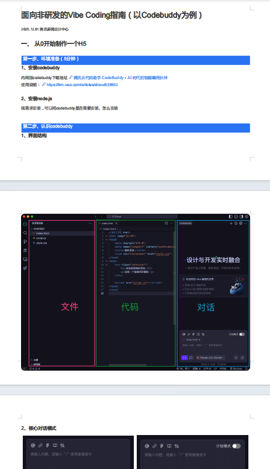
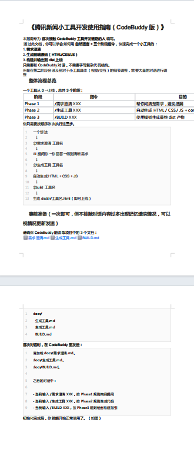

为什么做？
“Vibe Coding 给了设计师
从创意到实现的捷径”
设计师能否独立用 AI 完成前后端开发，并为业务带来真实可度量的增长？

Vibe Coding
案例驱动，微创新引导，自主构建垂直工具生态
2025.09—12
从 QQ 浏览器开始试验
腾讯新闻不是天然工具型产品
从搜索触发，到内容内嵌
02 / FROM DESIGN TO DELIVERY
把场景、界面与实现放在同一条任务链路中。
页面结构与交互实现
场景定义与体验细化
数据接入与上线联调
我的参与以工具实践与体验细化为主；业务接入和上线仍需要团队协作。
03 / REAL PRACTICE
单点实践可行，重复生产低效



每个工具都要重新整理需求
相似页面与交互骨架被反复搭建
联调、验证、上线缺少可复用方法
真正需要被放大的，不只是工具，而是方法。
04 / TOOL SAMPLE · MOON


05 / TOOL SAMPLE · FUEL


06 / MAKE EXPERIENCE REUSABLE
将实践中的沟通要求留下来，尝试在后续任务中重复使用。
这份文档记录工具从需求到呈现的过程：包括目标用户、信息要求、页面结构，以及联调时的反馈。
文档是协作起点，仍需结合具体工具持续修正。
明确输入、输出与成功判断，避免只描述“做一个页面”。
说明信息层级、组件用法、间距与关键状态。
先走通主流程，再检查加载、空态、错误与结果反馈。
07 / A SHARED WORKBENCH
开始尝试把零散经验整理成一套 AI 协作方法。
先定义场景、任务与约束
用 Design System 对齐体验
沉淀可复用的页面与状态结构


08 / DEFINE BEFORE GENERATING
先定义任务与价值，再决定是否值得实现。
它出现在哪个资讯使用场景中？
场景成立嵌入真实资讯情境
用户进入后，到底要完成什么？
触发自然在需要的时刻出现
总结、生成、推荐，还是辅助表达？
闭环完整体验有没有断掉
借助 AI Coding 快速原型，用反馈判断方向。
价值持续能否被反复使用、留下来
09 / FOLLOW ONE TASK
以油耗计算为例，沿着一次完整任务，拆解体验与实现。
让用户知道当前要算什么
名称、单位与输入区域放在一起
百公里油耗与输入依据可核对
根据行驶里程与消耗油量，快速知道车辆的百公里油耗。
整理信息与 UI 排列，参与数据导入和体验细化，让查询、输入与结果区域各有清楚的位置。
检查缺失输入、无效数字、重新计算与数据更新状态，作为后续验证清单。
10 / A DIFFERENT WORKFLOW
设计师可直接修改页面结构
统一 Design System
在生成与调试过程中
直接调整视觉、动效与交互
简单接入、联调验证
与团队协作推进上线
前端实现依赖研发排期
+设计负责方案输出
+后端接入依赖协作支持
11 / THE QUALITY GAP
AI 快速完成
页面骨架与初版生成
交互细节与边界状态
仍需设计师逐步打磨
高质量体验
无法被直接批量复用
AI 解决了“从 0 到 1”的实现问题，
却没有自动解决“从 1 到 90”的体验问题。
12 / EXPERIENCE CHECK
用主流程中的一个具体问题，说明自己如何作出交互判断。
输入项是否容易理解
主要操作是否明确
明确“公里 / 升”，把计算按钮放在输入之后。
出错时能否看懂原因
还能否继续操作
空值、零里程、数据获取失败，分别给出可行动的提示。
结果是否容易核验
是否支持再次调整
带着任务观察用户能否理解结果，并自主修改输入。
这些检查用于梳理体验的完整性；上线后的真实效果仍需要任务观察与数据反馈验证。
13 / REFLECTION & NEXT
参与部分工具制作、界面与体验细化，把零散过程整理为协作说明，并形成初步的体验判断。
原稿主要记录实践过程。场景是否成立、任务是否顺畅、文档能否帮助后续协作，仍需要具体任务与反馈支持。
生成越来越轻，
设计的价值开始转向定义与判断。